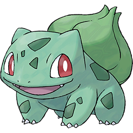
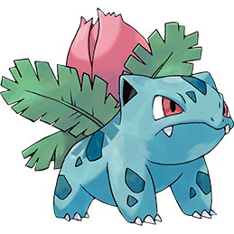
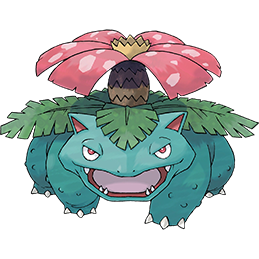

-
Bulbasaur
HP 70
Descrição
A Bulbasaur often rests in bright places so its bulb can absorb sunlight. It can be seen napping in bright sunlight. While it sleeps, the seed on its back catches the rays and uses the energy to grow.In the wild, Bulbasaur tend to be very rare, as they are shy creatures that prefer the company of their own kind.
-
Ivysaur
HP 100
Descrição
Ivysaur are able to naturally learn the powerful Grass-type attack Solar Beam, a move whose execution time depends largely upon the weather; it takes an excruciatingly long amount of time to perform this attack in hail, rain, or a sandstorm, but nearly no time at all in bright sunlight.
-
Venusaur
HP 270
Descrição
Venusaur are powerful but relatively nonviolent Pokémon. Despite their menacing appearances, Venusaur are docile Pokémon, preferring to sunbathe so that the plants on their backs can photosynthesize rather than fight. They follow sunny patches that reach the forest floor as the sun moves across the sky.